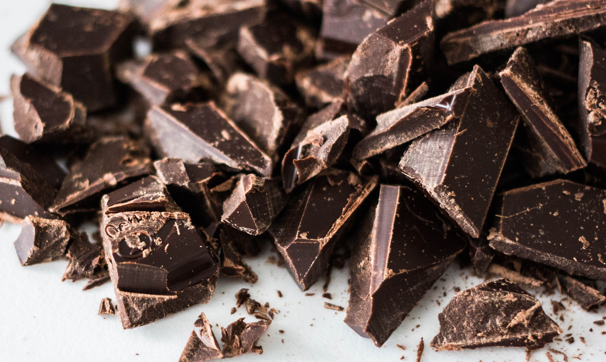

Chocolate is a food product made from roasted and ground cacao pods, that is available as a liquid, solid or paste, on its own or as a flavoring agent in other foods. Cacao has been consumed in some form since at least the Olmec civilization (19th-11th century BCE),and the majority of Mesoamerican people - including the Maya and Aztecs - made chocolate beverages.
Chocolate is one of the most popular food types and flavors in the world, and many foodstuffs involving chocolate exist, particularly desserts, including cakes, pudding, mousse, chocolate brownies, and chocolate chip cookies. Many candies are filled with or coated with sweetened chocolate. Chocolate bars, either made of solid chocolate or other ingredients coated in chocolate, are eaten as snacks. Gifts of chocolate molded into different shapes (such as eggs, hearts, coins) are traditional on certain Western holidays, including Christmas, Easter, Valentine's Day, and Hanukkah. Chocolate is also used in cold and hot beverages, such as chocolate milk and hot chocolate, and in some alcoholic drinks, such as creme de cacao.